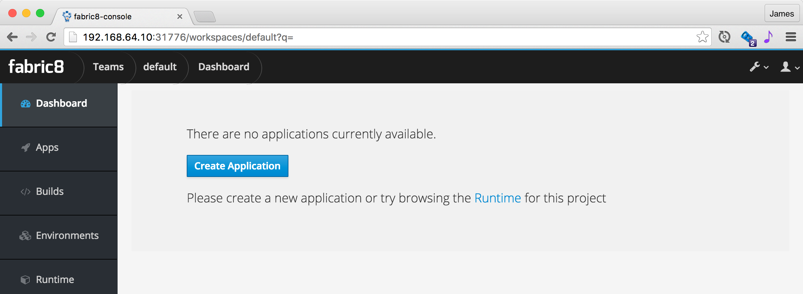
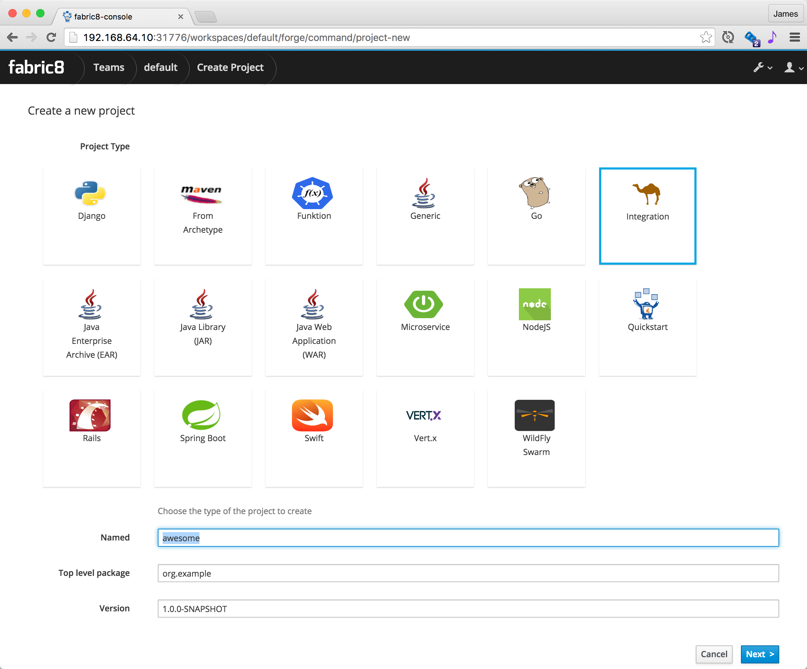
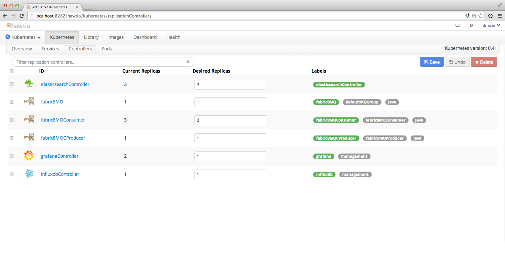

- Introduction
- 1. Overview
-
2.
Getting Started
- 2.1. Kubernetes
- 2.2. OpenShift
- 2.3. Persistence
- 2.4. Troubleshooting
- 2.5. Installing apps
- 2.6. Develop locally
- 3. Developing Microservices
- 4. Developer Reference
- 5. Microservices Platform
- 6. Integration
- 7. Quickstarts
-
8.
Tools
- 8.1. Forge
-
8.2.
Maven Plugin
-
8.2.1.
Old 2.x plugin
- 8.2.1.1. fabric8:migrate
- 8.2.1.2. docker:build
- 8.2.1.3. docker:push
- 8.2.1.4. fabric8:apply
- 8.2.1.5. fabric8:create-env
- 8.2.1.6. fabric8:create-routes
- 8.2.1.7. fabric8:delete-pods
- 8.2.1.8. fabric8:devops
- 8.2.1.9. fabric8:helm
- 8.2.1.10. fabric8:helm-push
- 8.2.1.11. fabric8:json
- 8.2.1.12. fabric8:recreate
- 8.2.1.13. fabric8:rolling
-
8.2.1.
Old 2.x plugin
- 8.3. Helm
- 9. Annotations
- 10. Architecture
- 11. Source Code
- 12. Changes from V1
- 13. FAQ
- Published with GitBook
Create a microservice
The easiest way to configure the Pipeline for your project is via the fabric8 developer console.
When you open the fabric8 console you should see a screen like this:

A Team is a kubernetes namespace running your development tools (like Jenkins, Nexus, JBoss Forge) and is associated with a number of environments (Testing, Staging, Production etc).
Click on the Team Dashboard which should take you to the Team Dashboard where you can create new apps or view your existing apps:

If you click the Create Application you get to the create wizard page:

Then you get to pick what kind of project you wish to create and its name:

Then choose your CD Pipeline:

If you choose Copy pipeline to project then the Jenkinsfile that defines the pipeline gets copied into your project's git repository so that you can easily edit it later on via a versioned source code change just like any other code change.
Now you will be taken to the App Dashboard where you can see all the environments and active pipelines along with recent commits on a single pane of glass. This is how it looks once the Canary release, Testing and Staging is complete; waiting for Promotion to Production

You can click on the Proceed button to promote to Production, or Abort to stop the pipeline.
You can easily switch between all your development tools (Gogs, Jenkins, Nexus etc) using the tool drop down menu at the top right of the screen:

Runtime tabs
The Team page has a Runtime tab that lets you browse the runtime of your development environment. Or from the home page you can click on an environment page to view its runtime.
The Runtime pages have a number of tabs that let you work with the various Kubernetes resources. We'll highlight the main ones you'll need to use:
Replicas
The main tab to get a feel for what's running in your system is the Replicas tab which shows all the replication controllers or ReplicaSets on Kubernetes.
To scale up or down a controller to run more or less pods (containers) just increase or decrease the Desired Replicas value and hit Save and hey presto pods are created or destroyed.

Overview
The Overview tab gives you a feel for how all the various services and replication controllers interact:

Demo
Here is a video demonstrating how to create a microservice and then deploy and edit it via Continuous Delivery